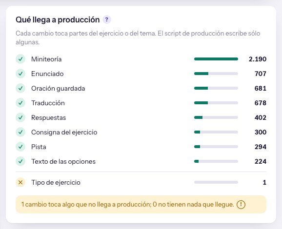

258Resumen · Lo hechoCorrecciones y Publicar · 3/11/2026
Lo que pediste«Sí, las dos»: arreglar los dos carteles del tablero y lanzar la medición de la base.
Qué estabas mirando
El brief 257: el tablero mostraba 1.048 ejercicios en «Todos» y content-audit contaba 1.792.
Qué pediste
Que el tablero diga lo mismo, que Publicar diga bien qué llega a producción y que se mida la base con los jueces de hoy.
Para qué
Cerrar la C2 cuanto antes.
De la conversación del 3/11 a la mañana.
El tablero ya cuenta lo mismo que content-audit
Los dos carteles arreglados y la medición de la base en marcha.
«Todos los jueces lo aprueban» ya muestra los 1.792 ejercicios que pasan, y Publicar dice que la miniteoría llega a producción. La base se está midiendo; termina a eso de las 16:30.
Lo que tenés que saber
Otro contenido
Una opinión guardada sobre una versión del ejercicio que después se volvió a corregir.
La base
El curso como está en producción. El cierre compara la corrección contra ella, y sólo con la versión de hoy de cada juez.
Dónde: la columna izquierda de Correcciones
1Otro contenido: 0 antes escondía 744 ejercicios buenos
2Todos 1.649 + Preparados 143 = 1.792, lo mismo que content-audit
3Los dos avisos amarillos 7 opiniones viejas de la C2; van al final
Foto del tablero en el 7800 a las 11:35, con la medición de Consigna corriendo.
«Todos» pasó de 1.048 a 1.792
1.792antes 1.048
pasan todos los jueces
0antes 744
en «Otro contenido»
2.408
cambios que los jueces dan por buenos
Ahora manda la cuenta de content-audit, que mira el contenido de hoy. Lo que ya está en «Todos» no cambia con la medición de la base: podés ir mirándolo.
Publicar ya dice que la miniteoría llega

Publicar, hoy: ocho partes con ✓ y una con ✕.
Antes marcaba ✕ en Miniteoría (2.190), Consigna (300) y Texto de las opciones (224): describía el script viejo, por plan. El audio se graba aparte.
La base se mide en unas cinco horas
Consigna que no se cumplecorriendo: 109 hechas763
Miniteoría con errordespués, por tema83
Más de una respuesta válidaal final533
Consultas nuevas por juez, a 4,6 por minuto y de a una: el tablero no deja correr dos. Reusa lo ya medido; por eso no son 4.200.
Qué sigue
1Medir la basehasta 16:30Los tres jueces, uno detrás del otro.
2IntegraryoSe apaga «Tres jueces no están al día».
3Las 7 de la C2minutosLos dos avisos amarillos.
4Cerrar la tandaCon tus dos respuestas de abajo.
Qué necesito de vos antes de cerrar
1 · ¿Cierro con el juez de hoy y dejo los criterios del 256 para después?
Sí · recomendadoNo, primero los criterios
Sumarlos ahora es otro examen, otra medición y otra corrección.
2 · ¿Rechazo los 94 que empeoraron, para que no viajen?
SíLos miro yo · recomendado
Quedarían como en producción; 79 los marca el revisor.